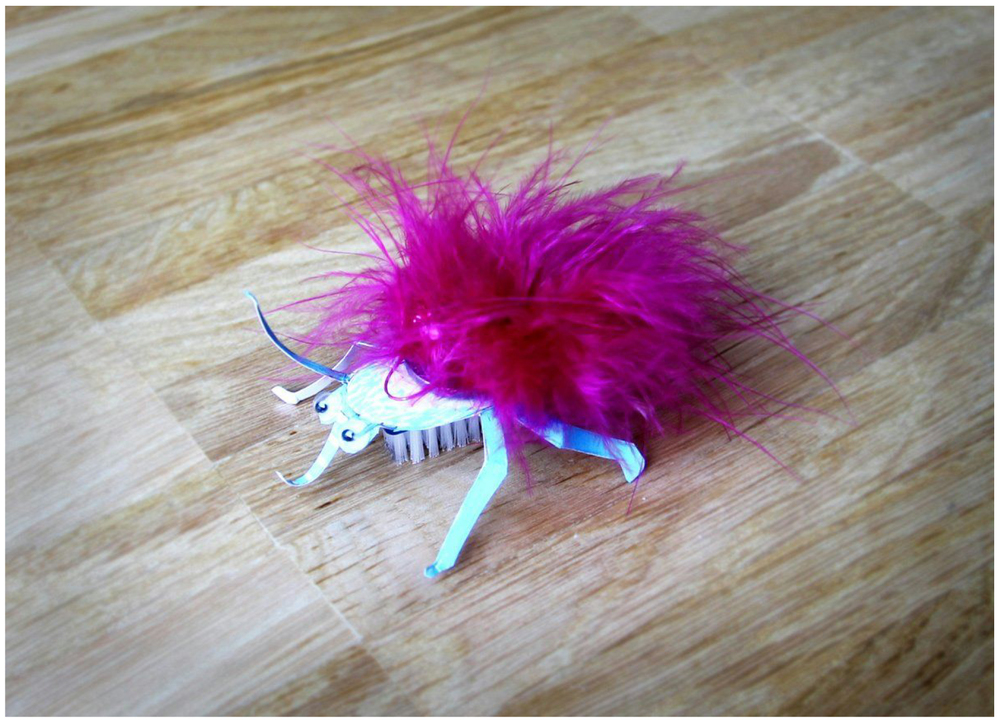
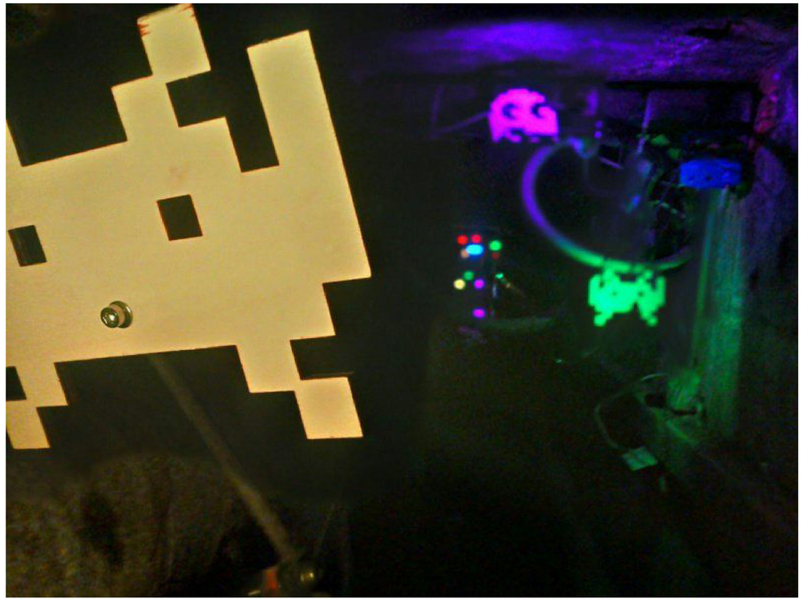
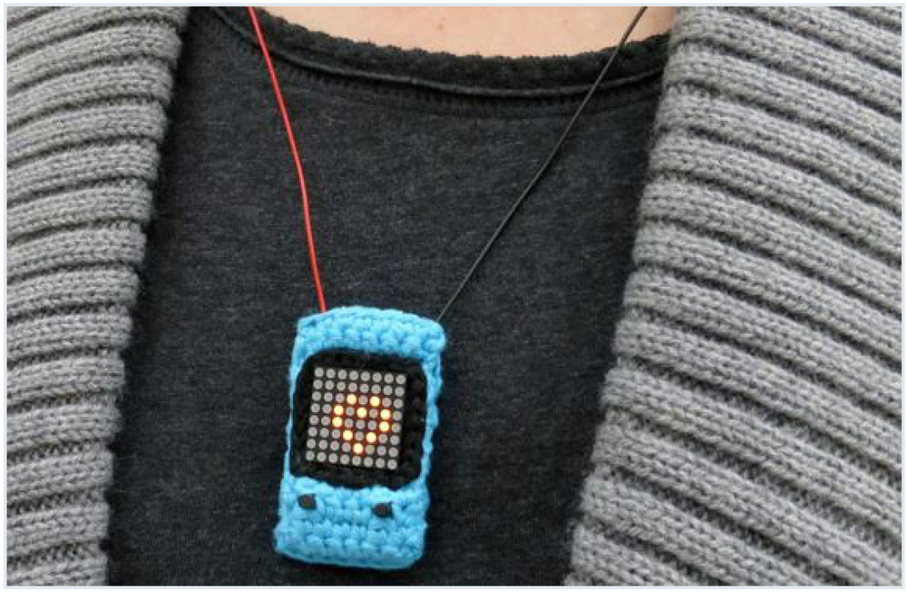

Die Messe für Technikbegeisterte: Am 30 & 31.1. in den Räumlichkeiten des Kunstvereins Familie Montez
Hallo Roman,
die Make Rhein-Main hattest Du ja bereits beim Webmontag Frankfurt im Dezember angekündigt. Jetzt ist es bald soweit: Die 3. Make Rhein-Main findet am letzten Januarwochenende in den Räumlichkeiten des Kunstvereins Familie Montez unter der Honsellbrücke statt.
Was erwartet uns auf der 3. Make Rhein-Main?
Hallo Frankfurt!
Die Make Rhein-Main ist eine Messe für Technikbegeisterte: Wir trommeln jetzt zum dritten Mal die Nerds, Geeks und modernen Bastler aus Rhein-Main-Neckar zusammen. Wir wollen, dass sich unsere Besucher in einem entspannten Rahmen mit den kreativen Genies von nebenan austauschen und vielleicht selbst was basteln.
Und gerade bei uns in der Gegend gibt es ja viele tolle Projekte - auf der 3. Make Rhein-Main kann man 3D-Druck, Drohnen, Retro-Rechner, Star-Wars-Cosplay und viele andere Bastleien erleben. Besonders stolz sind wir, dass der Hackerspace FFM das Laserspiel Space’n’Lasers mitbringt. Das wird ein echtes Highlight! Mit gut 20 Ausstellern haben wir die bislang größte und spannendste Make Rhein-Main organisiert. Das Programm findest du hier: www.make-rhein-main.de
Gibt es auch etwas zum Basteln bzw. Mitmachen?
Na, klar! Neben Space’n’Lasers kann man bei fab4u sein eigenes Hacklace basteln: Das ist eine Halskette (eng. necklace), die über eine LED-Anzeige verfügt.
Und bei Little Toy Factory können Kinder und Erwachsene mit Elektromotoren und Zahnbürsten kleine Vibro-Tierchen bauen.
Es gibt einen Graffiti-Workshop, Drohnenflüge, das Laserspiel und Voträge und vieles mehr. Ich denke, da ist für jeden was dabei. Außerdem denken wir gerade über eine Pappmaché-Ecke nach, vielleicht bekomme ich das noch hin.
Woher kommt die Idee zur Make und wer organisiert die Make Rhein-Main?
Eine starke Do-it-yourself-Bewegung gab es ja schon in den Achtzigern mal. Mit den neuen Technologien erlebt das jetzt nicht nur ein Revival, sondern eine ganz andere neue Dimension. Ich fände es halt toll, wenn es rund um Frankfurt noch mehr Menschen gäbe, die nicht nur Konsumopfer sind, sondern die neuen Möglichkeiten auch nutzen.
Vor drei Jahren habe ich das erste Mal eine Maker-Messe mit den Kollegen der Make Munich organisiert. Der Erfolg war riesig und die Münchner machen das vorbildlich und professionell. Ich habe das ins Rhein-Main-Gebiet gebracht. Hier gab es zum Glück schon eine starke Community, zum Beispiel das Festival Bended Realities für Digitale Spielkultur. Aber auch TEDxRheinMain und der #WMFRA sind total wichtige Communities - ohne deren Hilfe ginge es nicht!
Kostet es Eintritt? Wie finanziert sich die Make?
Ein ermäßigtes Ticket kostet 5 Euro. Ein Tagesticket kostet 8 Euro. Wir zahlen etwas Miete, haben Heizkosten und es gibt noch so eine Art Hausmeister-Flatrate. Somit sind die Kosten niedrig. Ich habe mal rund 3.000 Euro veranschlagt – viel weniger als bei anderen Messen in München, Berlin oder Hannover. Aber es ist wiederum auch zu viel für einen alleine. Deswegen haben wir aus der Make Rhein-Main jetzt ein Start-up gemacht. Wir haben aber schon immer das Motto gehabt, wenn etwas übrig bleibt, stecken wir es in neue Projekte.
Wird es dort auch Essensstände oder Foodtrucks geben?
Die Fam. Montez sorgt für Kaffee und Getränke an der Bar. Foodtrucks fände ich für die Zukunft interessant – aber es müsste halt schon was Besonderes sein.
Wie sieht es mit der Barrierefreiheit vor Ort aus?
Zugegeben, das ist nicht mein Spezialgebiet – aber es ist alles ebenerdig erreichbar. Vielleicht gibt es am Eingang eine kleine Stufe, aber die ist mini. Ich sag mal ja.
Mit welchen Verkehrsmitteln kommt man am besten hin? Gibt es dort Parkplätze?
Parkplätze gibt es rund um den Hafenpark viele – das ist eine große Verbesserung gegenüber unserem bisherigen Veranstaltungsort an der HfG Offenbach, wo vor allem die Aussteller immer unter dem Parkplatzmangel leiden mussten.
Der Veranstaltungsort ist 3 Minuten zu Fuß vom Frankfurter Ostbahnhof (U6) entfernt. Einfach Richtung Honsellbrücke am Skatepark vorbei – wir sind unter der Brücke in den schönen Hallenbögen.
Aber um deine Frage zu beantworten: In Frankfurt. Fahrrad. Immer.
Die letzten beiden Make Rhein-Main haben in Offenbach stattgefunden. War es schwierig, einen Ort für die Make in Frankfurt zu finden?
Ja! Und dass es geklappt hat, werde ich während der Make Rhein-Main insgeheim genießen. Es ist meine Belohnung, wenn dann immer alle zur Messe kommen und miteinander ins Gespräch kommen.
Roman, wir danken Dir für dieses Gespräch und freuen uns auf den Besuch der Make am 30. und 31. Januar!

Vibro-Roboter für Kinder

Laserspiel Space'n'Lasers Hackerspace FFM

Das Hacklace
Bildrechte Titelbild: "Make Rhein Main – Roman Kessler" von wmfra/frexxxenstein, lizensiert unter CC BY-NC-SA 2.0, Größe geändert.

Ersten Kommentar schreiben